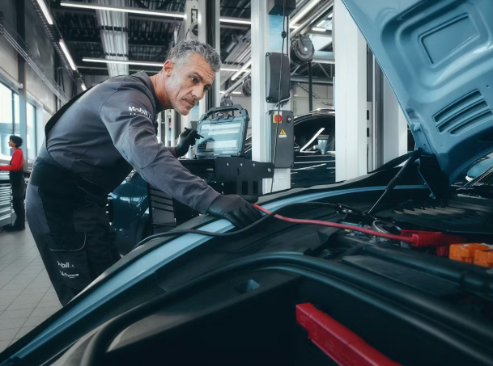

A Porsche is unlike any other car. Which is why service at Porsche is unlike any other service. Our technicians are committed to the crest and everything it stands for - just as your Porsche is the result of many years of sportscar development. With every Porsche innovation come new ways of maintaining it. Which means new information, new tools and new training for our technicians. So they are always perfectly prepared. Always correctly equipped. Always ready to take that little bit extra care, and be that little bit more precise.
That’s why your Porsche Centre is where your Porsche will be in the best hands, where you can expect to find people who care about your Porsche as much as you do. And who get as much pleasure from servicing and maintaining your Porsche as you do from driving it.
Genuine body repair for genuine performance.
Porsche represents the pinnacle of automotive performance. Since 1948, we have dedicated ourselves to perfecting the sports car. The very first Porsche, the 356/1, featured a pioneering weight-saving aluminium body.
Reducing weight – especially of the bodyshell – through the systematic use of lightweight materials has always been a key part of our overall vehicle concept. Less weight and optimised weight distribution mean enhanced acceleration, driving dynamics, stability and braking performance. The result is maximum driving pleasure and optimum performance.
High-tech repair methods for high-tech bodyshells.
While enhancing your Porsche’s performance, revolutionary materials and bonding processes also make body repairs more complex and exacting – requiring refined diagnostic and repair methods. Multi-material bodyshells must not only be measured digitally – to extremely tight tolerances – but also require the use of special tools by specially trained technicians in highly regulated repair processes. In addition, only Porsche Genuine Parts may be fitted to maintain the overall bodywork concept and preserve the integrity, value and safety of your Porsche.

We therefore recommend to carry out body repairs on Porsche vehicles with multi-material technology at Porsche. Our technicians receive regular training in the use of the special tools required and the repair processes tailored to each individual Porsche model. They know your Porsche inside and out from many years of experience to keep it in its original condition.